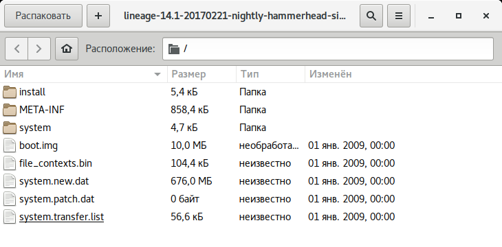
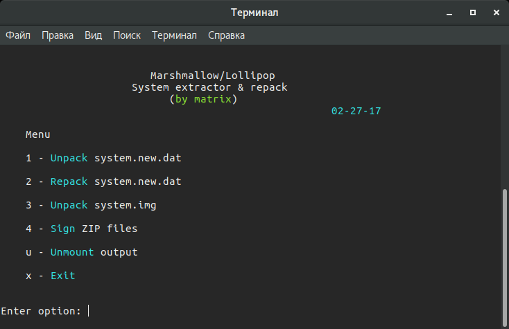
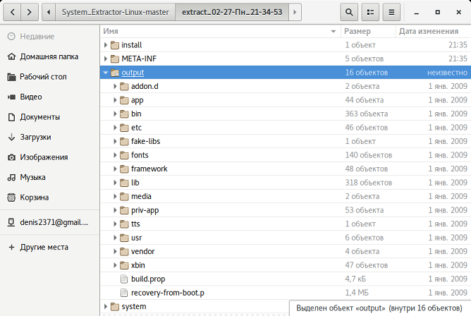
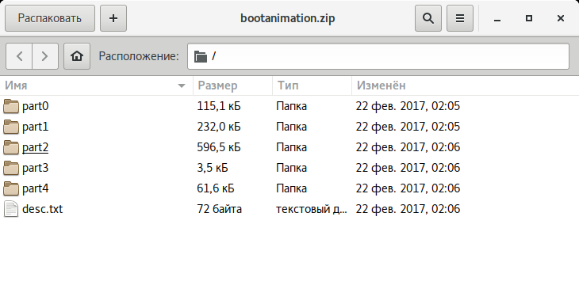
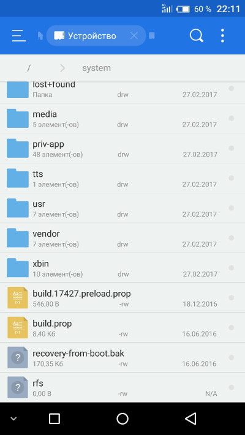
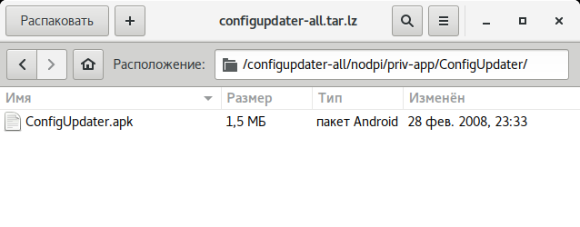
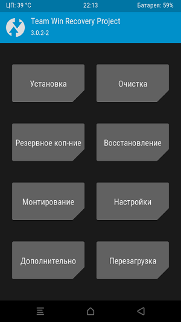

Содержимое ZIP-файла прошивки LineageOS для Nexus 5
Содержимое ZIP-файла прошивки LineageOS для Nexus 5Содержание статьи
Наверняка у тебя как у пользователя Android возникало желание сделать операционную систему лучше, добавить полезное, убрать лишнее и поделиться своим творением с обществом. Сборка собственной прошивки из исходников — сложный процесс, требующий глубоких знаний предмета, однако никто не запрещает взять стандартную прошивку смартфона и адаптировать ее под свои нужды. Это не так уж и сложно сделать.
Начнем с того, что тебе нужен Linux. В Windows ты сможешь только разобрать прошивку, но собрать обратно уже не получится по чисто техническим причинам. Теперь о прошивке. Обычно они распространяются в виде ZIP-архивов, прошиваемых через кастомные рекавери. Именно один из них нам и понадобится для опытов. Начинать путь ромодела я рекомендую с какой-нибудь максимально приближенной к AOSP кастомной прошивки, потому что в ней зачастую проще разобраться, чем в стоке.
Нужный ZIP можно найти на XDA Developers или 4PDA. Но имей в виду, что нужна прошивка конкретно для твоей модели аппарата, — у того же Galaxy S7 есть несколько модификаций для разных рынков, не всегда совместимых между собой.
После загрузки распакуем архив с помощью любого архиватора. Внутри будет следующий набор файлов и папок:
Содержимое ZIP-файла прошивки LineageOS для Nexus 5
Файлы system.new.dat и system.transfer.list представляют для нас наибольший интерес. Точнее, не они, а содержащаяся в них система. Но добраться до нее не так просто.
Скрипт
Самые ленивые могут разобрать прошивку с помощью скрипта System_Extractor-Linux.

Скрипт для распаковки system.new.dat в Linux
Распаковываем архив с прошивкой в любую папку (например, в rom):
$ mkdir ~/rom
$ unzip путь_до_архива -d ~/rom/
Скачиваем нужные нам инструменты в эту папку:
$ cd ~/rom
$ wget https://github.com/xpirt/sdat2img/raw/master/sdat2img.py
Запускаем скрипт:
$ chmod +x sdat2img.py
$ ./sdat2img.py system.transfer.list system.new.dat system.img
Он преобразует файл system.new.dat в raw-образ с именем system.img. Монтируем образ к подпапке mnt:
$ mkdir mnt
$ sudo mount -t ext4 -o loop system.img ~/rom/mnt Содержимое образа system
Содержимое образа system

После распаковки system появится следующая каталоговая структура:
Ознакомившись с базовой структурой Android, начнем вносить изменения.
Все предустановленные программы можно найти в двух папках:
Друг от друга они отличаются привилегиями доступа. Если программы из app имеют такие же полномочия, как сторонние программы (например, установленные из Play Store), то приложения из priv-app могут использовать привилегированные API (права privileged). Подробнее об этом можно узнать из нашей статьи.
Для предустановки приложения в прошивку просто кинь ее APK-файл в /system/app/. Можно, конечно, создать отдельную папку, но в нашем случае в этом нет смысла, потому что папка служит для хранения библиотек и odex-файлов, которых у нас попросту нет. Для удаления просто удали папку с ним.
Можно пойти дальше и поменять стоковые приложения на аналоги. К примеру, для замены календаря удаляем папку Calendar и копируем в /system/app наш любимый com.rpagyc.simplecalendar.apk. А можно и не копировать. Тогда прошивка будет без календаря.
Главное, помни: стоковые программы могут быть связаны между собой. Поэтому удаление одной проги вполне может привести к полной неработоспособности другой (к примеру, CalendarProvider и Calendar: удалив первый, ты сделаешь неработоспособным не только стоковый, но и любой другой календарь). К счастью, в чистых AOSP-прошивках взаимосвязей не так много.
Анимация хранится в виде PNG-картинок, упакованных в архив /system/media/bootanimation.zip без сжатия. Внутри архива находятся:
Файл desc.txt может содержать нечто вроде
1920 1080 60
p 1 0 part0
p 0 0 part1
Назначение этих строк интуитивно понятно: 1920 × 1080 — разрешение картинки, 60 — число кадров в секунду. Part0 и part1 указывают на папки, из которых будет воспроизводиться анимация, и последовательность воспроизведения. Вообще, может быть как одна часть, так и несколько (три и больше).
Изображения, находящиеся в папках part, пронумерованы пятью цифрами в порядке воспроизведения: 00000.png, 00001.png, 00002.png... Эти изображения можно поменять на свои, тем самым создав оригинальную анимацию. А можно просто удалить файл bootanimation.zip. Тогда девайс будет показывать анимацию из стандартного Android. Или воспользоваться уже готовой коллекцией анимаций на 4PDA.

Четыре части в bootanimation.zip для LineageOS
Фактически все звуки, которые воспроизводит система, хранятся в папке /system/media/audio. Внутри нее ты найдешь следующие папки:
В alarms, notifications, ringtones можно накидать сколько угодно любых мелодий. Взять их можно, например, здесь:
И маленький лайфхак: удаление файлов из папки ui приведет не к сбоям и ошибкам, а к исчезновению системных звуков. Поэтому ты можешь легко отключить звук создания снимка с камеры, снятия скриншота, просто потерев содержащие эти звуки файлы (их имена интуитивно понятны).
Шрифты хранятся в fonts. Найти архивы с файлами шрифтов можно на 4PDA и XDA. Для установки достаточно скопировать с заменой ttf-файлы из архива в папку fonts.
В образе system есть интересный файлик build.prop, содержащий множество полезной информации о железе устройства и настройках, устанавливаемых по умолчанию, для различных стоковых приложений. Справедливости ради замечу, что это не всегда так. Например, в Gigaset ME и ME Pro build.prop разделен на две части. В одной части содержатся настройки для Gigaset ME, а для ME Pro некоторые строки продублированы, но ключи (название смартфона и так далее) в них другие. Это было сделано, чтобы обеспечить более-менее корректную работоспособность одной и той же прошивки на разных аппаратах.

Дополнительный файл для Gigaset ME и ME Pro
Build.prop содержит (или может содержать) огромное количество настроек. Некоторые из них ничего не меняют, некоторые улучшают одно за счет ухудшения другого, но есть те, которые действительно полезны:
Почти всегда кастомные прошивки поставляются без сервисов Google и магазина приложений. Разработчики предлагают нам установить их отдельно с помощью пакета GApps. Однако его можно интегрировать прямо в прошивку.
Для начала необходимо скачать пакет GApps. Я рекомендую брать архивы Open GApps. Выбираешь версию Android, архитектуру процессора и вариант комплектации (Pico, Nano, Stock...), который определяет, сколько различных приложений Google содержит архив. Я рекомендую скачать версию Pico. Она содержит только Play Store и набор необходимых для его работы библиотек.
Интеграция GApps в прошивку выполняется так:

Структура каталогов configupdater-all.tar.lz
Необходимо понимать, что место для установки прошивок ограниченно. Нельзя установить прошивку, размер которой перевешивает размер раздела system устройства. Посмотреть его значение можно, используя ADB:
$ adb shell df /system Инфа о разделе system
Инфа о разделе system
Второй вариант: поставить на устройство терминал и набрать команду
$ df /system
Размер раздела в байтах можно узнать, установив на смартфон BusyBox и выполнив в терминале команду
$ busybox df -B 1 /system
Или то же самое с помощью ADB:
$ adb shell busybox df -B 1 /system
Место, занимаемое прошивкой, будет приблизительно равно размеру system в распакованном виде. Вообще, при создании прошивки необходимо учитывать, что юзер также может прошить поверх нее различные модификации (SuperSU, Xposed) или перенести приложения в раздел system. Например, минимальный пакет приложений Google (Pico) требует минимум 150 Мбайт дополнительного пространства для установки.
При необходимости размер файла прошивки можно уменьшить, удалив не только ненужные программы из /system/app (/system/priv-app) и звуки вызова из system/media/audio и bootanimation.zip, но и:
После внесения изменений нужно собрать все обратно. Сначала запакуем раздел system в system.new.dat. Скачиваем нужные нам инструменты:
$ wget https://github.com/xpirt/img2sdat/raw/master/img2sdat.py
$ wget https://github.com/xpirt/img2sdat/raw/master/blockimgdiff.py
$ wget https://github.com/xpirt/img2sdat/raw/master/common.py
$ wget https://github.com/xpirt/img2sdat/raw/master/rangelib.py
$ wget https://github.com/xpirt/img2sdat/raw/master/sparse_img.py
$ sudo apt-get install android-tools-fsutils
Преобразовываем нашу папку обратно в RAW-образ. Назовем его system_new.img:
$ sudo make_ext4fs -T 0 -S file_contexts -l 1073741824 -a system system_new.img output/
1073741824 меняем на размер раздела system в байтах. Желательно даже сделать его чуть меньше. Делаем из RAW-образа sparse-образ:
$ img2simg system_new.img system_snew.img
Преобразуем наш образ в system.transfer.list и system.new.dat, которые и нужно кидать в архив с прошивкой, но сначала удалим старые файлы:
$ rm -rf system.transfer.list
$ rm -rf system.new.dat
$ rm -rf system.patch.dat
$ chmod +x img2sdat.py
$ ./img2sdat.py system_snew.img
Отделим файлы прошивки от лишней шелухи (файлов, которые мы загружали для работы. Для этого удобно пользоваться архивом с прошивкой). Удалили? Теперь нужно запаковать прошивку в ZIP-архив (любым архиватором).
Осталось подписать архив. Сделать это можно как на самом Android с помощью ZipSigner, так и на ПК (потребуется установленная Java):
$ wget https://github.com/appium/sign/raw/master/dist/sign.jar
$ java -jar файл.zip
Во время сборки system.new.dat ты можешь столкнуться с несколькими проблемами, вызванными постоянными изменениями в механизмах формирования прошивок Android. Описанный выше способ должен хорошо сработать в случае основанной на Android 5.1 прошивки, в более новых могут возникнуть сложности, так что потребуется использовать другие версии инструментов сборки. К сожалению, мы не можем описать все нюансы сборки, поэтому, возможно, придется погуглить.
Для установки кастомной прошивки необходим кастомный рекавери TWRP, позволяющий устанавливать неподписанные или подписанные тестовым ключом прошивки (именно такую мы создали). В журнале мы неоднократно описывали процесс его установки, да и в ветках форума, посвященных твоему устройству, обычно есть достаточно информации для того, чтобы это сделать.

TWRP
Эта статья описывает лишь верхушку огромного айсберга под названием «модификация прошивок». «Серьезные» прошивки не только дополняют ядро и саму прошивку со стоковыми приложениями множеством функций (которые зачастую вырваны из других ядер и прошивок), организовывая или даже меняя принципы их взаимодействия, но и вполне могут кардинально менять принципы работы ОС. Правда, такая поделка — это уже не Android, а отдельная ОС, даже если Play-сервисы получится туда поставить (кстати, такие действия, мягко говоря, не поощряются Google). Ну и не забываем: все оболочки от производителей — TouchWiz, ZenUI, HTC Sense и так далее — всего лишь обычные кастомы, максимально привязанные к железу устройства и друг к другу.